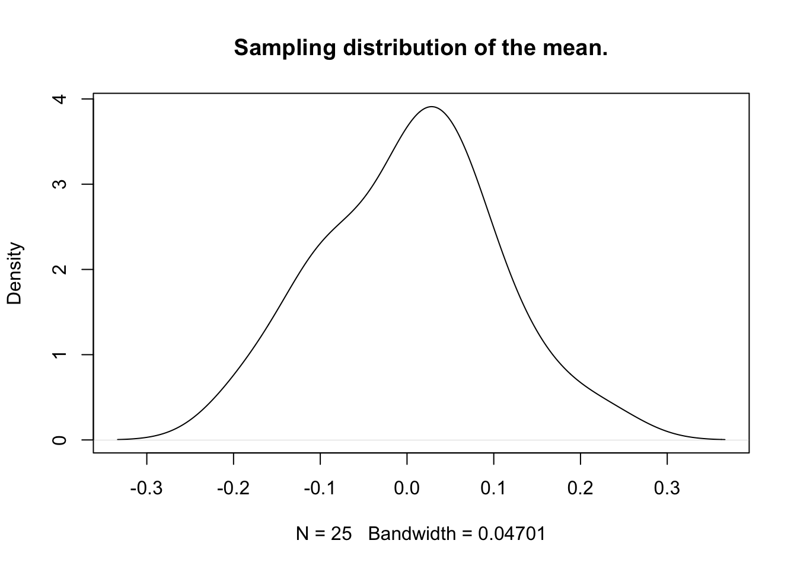
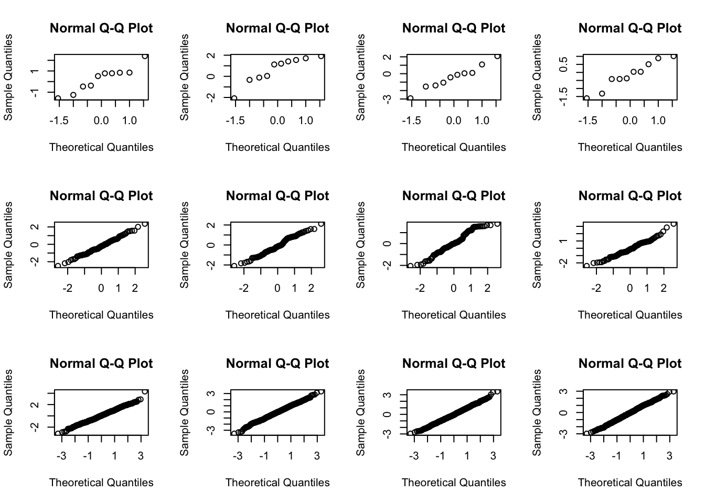
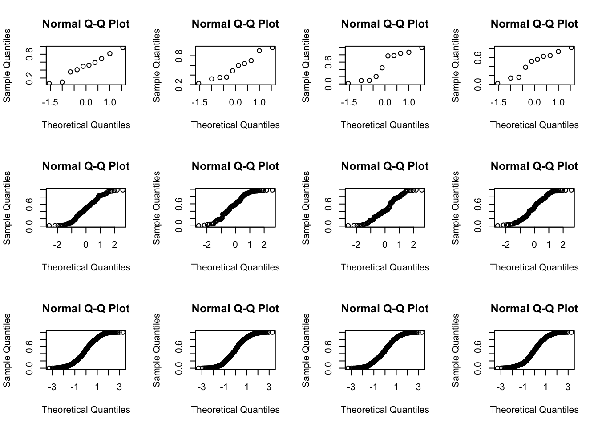
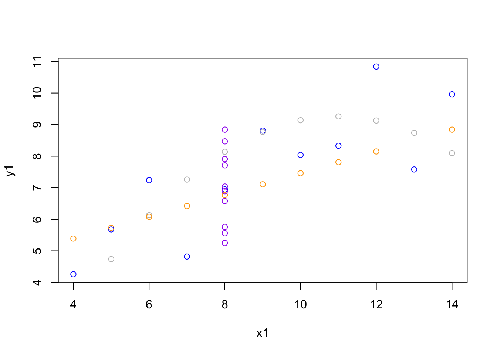
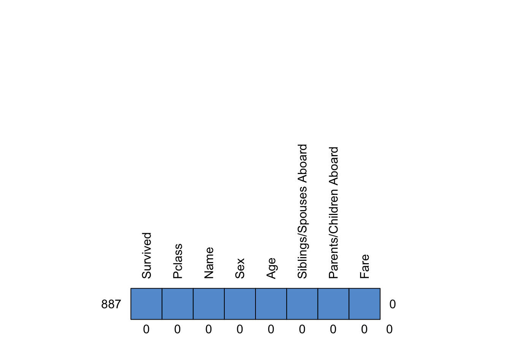

Vandaag gaan we de diepte in. We zullen leren hoe we uit data een model kunnen halen, en hoe we dat model kunnen gebruiken om voorspellingen te doen. We zullen ook leren hoe we de kwaliteit van ons model kunnen beoordelen. Dit is een belangrijke stap in het proces van data-analyse, en een goed begrip hiervan zal ons in staat stellen om betere beslissingen te nemen op basis van onze data. Veel van de modellen vandaag zullen betrekking hebben op marginale (één dimensie), conditionele (twee dimensies) of joint verdelingen (meerdere dimensies tegelijkertijd). Stiekem zullen ze allemaal in meer of mindere mate terugvoeren op least squares methodologie - de methoden die gebruik maken van de kleinste gekwadrateerde verschillen om een schatting te kunnen verkrijgen. De slides voor het hoorcollege kunt u hier vinden
Practical 1
We use the following packages in this Practical:
library(MASS)library(plyr)library(dplyr)
Attaching package: 'dplyr'
The following objects are masked from 'package:plyr':
arrange, count, desc, failwith, id, mutate, rename, summarise,
summarize
The following object is masked from 'package:MASS':
select
The following objects are masked from 'package:stats':
filter, lag
The following objects are masked from 'package:base':
intersect, setdiff, setequal, union
library(magrittr)library(ggplot2)
If you need package plyr and package dplyr, always load package plyr first! If you load dplyr before plyr, plyr will produce a warning.
Exercises
In this exercise we will again be using random number generators. When using random numbers, it is wise to always fix the random seed (the starting point of the number generation). This ensures that in the future we can exactly reproduce the chain of executions that led to the randomly generated results.
Start by setting a random seed. If you follow my random seed and reproduce the code below in exactly the same order, you will get the same results. If you do not follow the exact ordering (i.e. if you skip or rerun a question, or have different code), your results may be different due to random sampling. This is not a bad thing! It is just a result of the method and should be that way.
#set random seed, make things reproducibleset.seed(123)
A group of experimenters have 4 experimental conditions they want to run. In each of these four conditions, there are seven manipulations that should be in a random order. Design the experiment such that for every condition, the seven manipulations are randomly ordered.
# Make an empty matrix. design <-matrix(NA, 7, 4)# Name the columns and rows. colnames(design) <-paste("condition", 1:4, sep=" ")rownames(design) <-paste("manipulation", 1:7, sep=" ")# Put a random ordering in each column.for(j in1:ncol(design)) { design[, j] <-sample(1:7, replace=FALSE)}design
Generate a vector of 100 random standard normal numbers.
# Get random numbers.y <-rnorm(100)
Compute the mean and standard deviation of the vector from question 2.
mean(y)
[1] -0.002030083
sd(y)
[1] 0.8947288
Generate a vector of 100 random standard normal numbers (like in Exercise 2) 25 times, and each time store means in object av. Compute the standard deviation of av.
# Repeat the sampling of numbers 25 times, each time getting the mean.av <-numeric(25)for(i in1:25) { av[i] <-mean(rnorm(100))}# Standard error of sample mean.sd(av)
[1] 0.08063988
or alternatively with function rlply() from package plyr:
samples <-rlply(.n =25, rnorm(100, mean =0, sd =1))
Function plyr::rlply() evaluates an expression \(n\) times and combines the results in a list. So the call rnorm(5000, mean = 0, sd = 1) is evaluated .n = 25 times.
We can then call the following sapply() statement to create object av:
av <-sapply(samples, mean)sd(av) # Standard error of sample mean.
[1] 0.08895437
Function sapply() evalutes the expression mean() over each listed element in samples. The result is a vector of length 100 with the means of the 100 samples from the samples object.
Create a function that automatically returns a vector like av.
# Create a function for sd of sample meansmean.av <-function(n =100, reps =25) {# Make an empty vector. av <-numeric(reps)for(i in1:reps) {# Make a random standard normal dataset of size n. y <-rnorm(n)# Compute and save the mean. av[i] <-mean(y) }# Return the vector of means. av}sd(mean.av())
[1] 0.1084715
or, with rlply():
# Create a function for sd of sample meansmean.av <-function(n =100, reps =25) {rlply(.n = reps, rnorm(n, mean =0, sd =1)) %>%sapply(mean)}sd(mean.av())
[1] 0.08855458
Add the option to this function to print a density plot. Set it to TRUE by default.
# Create a function for sd of sample meansmean.av <-function(n =100, reps =25, plotDens =TRUE) {# Make an empty vector. av <-numeric(reps)for(i in1:reps) {# Make a random standard normal dataset of size n. y <-rnorm(n)# Compute and save the mean. av[i] <-mean(y) }if (plotDens) {plot(density(av), main ="Sampling distribution of the mean.") }# Return the vector of means. av}
The above function does two things:
It returns a vector of 25 means by default (the default argument for reps is reps=25)
It plots a densityplot of those 25 means, if wanted. By default it does this because the argument for plotting is plotDens=TRUE.
Let’s go through the function.
av <- numeric(reps). This line creates a vector with zeros that is long as the number of reps.
for(i in 1:reps) {. This line starts the for loop and dictates that we are goint to repeat the code within the loop 1 through 25 - so 25 times in total.
y <- rnorm(n). This samples n values from the standard normal distribution. Remember that the default argument for n is n=100. So, by default it draws 100 values. These values are stored in object y, such that we can use it later on in the function.
av[i] <- mean(y). Now we calculate the mean on the current (ith) sample and store that in the vector av as the ith element. Over all the for-loops we will replace each element in av with the mean of the respective simulated sample.
if (plotDens) { evaluates whether to execute the code within the { and } that define the if-statement. This code is designed to print a plot. The default for plotDens is plotDens=TRUE, so by default the if-statement will print the plot. if looks for TRUE or FALSE and only executes its code when it finds TRUE. Because plotDens is TRUE, we do not have to say if (plotDens = TRUE) and if(plotDens) suffices.
plot(density(av), main = "Sampling distribution of the mean.") plots a densityplot with main title ‘Sampling distribution of the mean.’.
or, with rlply() and a pipe:
# Create a function for sd of sample meansmean.av <-function(n =100, reps =25, plotDens =TRUE) { av <-rlply(.n = reps, rnorm(n, mean =0, sd =1)) %>%sapply(mean) if (plotDens) {density(av) %>%plot(main ="Sampling distribution of the mean.") }return(av)}sd(mean.av())

[1] 0.09943855
In the next codeblock, we first set the graphical parameters to display a 2 by 2 matrix of plots. Then we run the function mean.av() 4 times; each time generating a plot. After running the function four times, we will have filled the 2 by 2 plot raster. We do not have to specify the arguments of this function because all arguments are set by default. We end by resetting the graphical parameters to its original state by stating par(mfrow = c(1, 1)), such that when we plot a new graph, it will be displayed as a single graph and not in a raster of 4 plots.
Use mfrow to set up the layout for a 3 by 4 array of plots. In the top 4 panels, show normal probability plots (‘QQ-plots’) for 4 separate “random” samples of size 10, all drawn from a normal distribution. In the middle 4 panels, display plots for samples of size 100. In the bottom 4 panels, display plots for samples of size 1000. Comment on how the appearance of the plots changes as the sample size changes.
par(mfrow=c(3, 4))for (i in1:3) {for (j in1:4) {qqnorm(rnorm(10^i)) }}

Repeat exercise 8, but use runif instead of rnorm.
par(mfrow=c(3, 4))for (i in1:3) {for (j in1:4) {qqnorm(runif(10^i)) }}

par(mfrow=c(1, 1))
Use the function rexp() to simulate 100 exponential random numbers with rate 0.2. Do the following on the simulated random numbers
Obtain a density plot for the observations.
Find the sample mean of the observations.
Compare with the population mean (the mean for an exponential population is 1/rate).
# Simulate numbers data <-rexp(100, .2) # Plot the data data %>%density(from =0) %>%plot(main="Exponential with rate = 0.2")
Plot the four fitted models from Exercise 11 in a single plotting window. Make the points in the plots blue, gray, orange and purple, respectively.
plot(y1 ~ x1, col ="blue", data = anscombe)points(y2 ~ x2, col ="gray", data = anscombe)points(y3 ~ x3, col ="orange", data = anscombe)points(y4 ~ x4, col ="purple", data = anscombe)

Now plot all four fitted models from Exercise 11 in a plotting window with 2 rows and 2 columns.
par(mfrow =c(2, 2))plot(y1 ~ x1, data = anscombe)plot(y2 ~ x2, data = anscombe)plot(y3 ~ x3, data = anscombe)plot(y4 ~ x4, data = anscombe)
We use the titanic data set for this exercise. Download the titanic.csv data set.
con <-url("https://www.gerkovink.com/erasmus/Day%202/Part%20D/titanic.csv")titanic <-read_csv(con)
Rows: 887 Columns: 8
── Column specification ────────────────────────────────────────────────────────
Delimiter: ","
chr (2): Name, Sex
dbl (6): Survived, Pclass, Age, Siblings/Spouses Aboard, Parents/Children Ab...
ℹ Use `spec()` to retrieve the full column specification for this data.
ℹ Specify the column types or set `show_col_types = FALSE` to quiet this message.
Exercise 1Inspect the titanic data set by calling titanic in the console and with functions summary(), str() and md.pattern().
titanic
# A tibble: 887 × 8
Survived Pclass Name Sex Age Siblings/Spouses Abo…¹
<dbl> <dbl> <chr> <chr> <dbl> <dbl>
1 0 3 Mr. Owen Harris Braund male 22 1
2 1 1 Mrs. John Bradley (Floren… fema… 38 1
3 1 3 Miss. Laina Heikkinen fema… 26 0
4 1 1 Mrs. Jacques Heath (Lily … fema… 35 1
5 0 3 Mr. William Henry Allen male 35 0
6 0 3 Mr. James Moran male 27 0
7 0 1 Mr. Timothy J McCarthy male 54 0
8 0 3 Master. Gosta Leonard Pal… male 2 3
9 1 3 Mrs. Oscar W (Elisabeth V… fema… 27 0
10 1 2 Mrs. Nicholas (Adele Ache… fema… 14 1
# ℹ 877 more rows
# ℹ abbreviated name: ¹`Siblings/Spouses Aboard`
# ℹ 2 more variables: `Parents/Children Aboard` <dbl>, Fare <dbl>
We can see that the titanic data set is imported as a tibble. A tibble is a more flexible data frame with a much nicer printing class.
summary(titanic)
Survived Pclass Name Sex
Min. :0.0000 Min. :1.000 Length:887 Length:887
1st Qu.:0.0000 1st Qu.:2.000 Class :character Class :character
Median :0.0000 Median :3.000 Mode :character Mode :character
Mean :0.3856 Mean :2.306
3rd Qu.:1.0000 3rd Qu.:3.000
Max. :1.0000 Max. :3.000
Age Siblings/Spouses Aboard Parents/Children Aboard
Min. : 0.42 Min. :0.0000 Min. :0.0000
1st Qu.:20.25 1st Qu.:0.0000 1st Qu.:0.0000
Median :28.00 Median :0.0000 Median :0.0000
Mean :29.47 Mean :0.5254 Mean :0.3833
3rd Qu.:38.00 3rd Qu.:1.0000 3rd Qu.:0.0000
Max. :80.00 Max. :8.0000 Max. :6.0000
Fare
Min. : 0.000
1st Qu.: 7.925
Median : 14.454
Mean : 32.305
3rd Qu.: 31.137
Max. :512.329
The summary() output gives us direct information about the parametric nature of the columns is the data
When we study the structure of the data set, we see that the outcome Survived is not coded as a factor, but as a numeric column. The same holds for Pclass. This will influence the default estimation later on. There are more irregularities, but we’ll ignore those for now.
md.pattern(titanic, rotate.names =TRUE)
/\ /\
{ `---' }
{ O O }
==> V <== No need for mice. This data set is completely observed.
\ \|/ /
`-----'

Survived Pclass Name Sex Age Siblings/Spouses Aboard
887 1 1 1 1 1 1
0 0 0 0 0 0
Parents/Children Aboard Fare
887 1 1 0
0 0 0
There are no missing values in this titanic data set.
Exercise 2Correct the measurement level of the columns Pclass and Survived. Then ask for the summary() once more.
Survived Pclass Name Sex
No :545 1st class:216 Length:887 Length:887
Yes:342 2nd class:184 Class :character Class :character
3rd class:487 Mode :character Mode :character
Age Siblings/Spouses Aboard Parents/Children Aboard
Min. : 0.42 Min. :0.0000 Min. :0.0000
1st Qu.:20.25 1st Qu.:0.0000 1st Qu.:0.0000
Median :28.00 Median :0.0000 Median :0.0000
Mean :29.47 Mean :0.5254 Mean :0.3833
3rd Qu.:38.00 3rd Qu.:1.0000 3rd Qu.:0.0000
Max. :80.00 Max. :8.0000 Max. :6.0000
Fare
Min. : 0.000
1st Qu.: 7.925
Median : 14.454
Mean : 32.305
3rd Qu.: 31.137
Max. :512.329
We now see the tabular information about the Survived and Pclass columns. This is because these columns are now coded as factors (i.e. categorical variables with a numeric representation). Note that in the mutate call, I used the %<>% pipe. This assign pipe returns the endresult of the pipe to the original object. This mitigates the use of the <- assign operator and the double calling of the titanic set in the regular strategy below:
Exercise 3Split the data manually into two parts: a training part (70% of cases) and a test part (30% of cases). Verify the dimensions of the splits with function dim().
set.seed(123) # for reproducibilitytrainIndex <-createDataPartition(titanic$Survived, p = .7, times =1, list =FALSE)train <- titanic[trainIndex, ]test <- titanic[-trainIndex, ]
We make use of the createDataPartition() function from package caret to generate the rownumbers for the splits. We could have also done this manually with e.g. trainIndex <- sample(1:nrow(titanic), round(.7*nrow(titanic)), replace = TRUE). I find the createDataPartition() function always convenient, because it directly plugs into the caret functionality.
dim(train)
[1] 622 8
dim(test)
[1] 265 8
We can see that the split with 622 cases in the train set and 265 cases in the test set approximates the desired p = .7 split probability with 0.7012401.
Linear model
Exercise 3Predict Age from Pclass, Sex and Survived. Train your model on the train set and validate it on the test set
fit <- train %$%lm(Age ~ Pclass + Sex + Survived) pred <- fit %>%predict(newdata = test)
The fit object contains the model fitted on the training data. The pred object contains the predictions obtained by applying the fit model to the test data.
Exercise 4Now calculate the RMSE and the \(R^2\) for the predictions and compare those to the fitted model in fit
results <-data.frame(R2 =c(cor(pred, test$Age)^2, summary(fit)$r.squared),RMSE =c((pred - test$Age)^2%>% sum %>% sqrt, fit$residuals^2%>% mean %>% sqrt))rownames(results) <-c("predicted", "fitted")results
We see that the \(R^2\) is lower for the predictions and that the root mean squared error is higher. For unbiased estimators we can view the RMSE as the standard error of the estimator. The MSE would then be the variance of that unbiased estimator.
Exercise 5Now use the caret package to do the same as above. Use the default paramters for the train() function and use the train data to train the model.
set.seed(123) # for reproducibility# train the model on training setmodel <-train(Age ~ Pclass + Sex + Survived,data = train,method ="lm")model
Linear Regression
622 samples
3 predictor
No pre-processing
Resampling: Bootstrapped (25 reps)
Summary of sample sizes: 622, 622, 622, 622, 622, 622, ...
Resampling results:
RMSE Rsquared MAE
12.83484 0.1941763 10.1362
Tuning parameter 'intercept' was held constant at a value of TRUE
We see that the train function by default uses a Bootstrapped resampling: the train data is resampled with replacement 25 times and every time the model is evaluated. Every individual sample is slightly different and, hence, the distribution of obtained results is also different. We can get information about the variance from:
Exercise 6Now use the model from (5) to predict the test data and calculate the same metrics as in (4).
pred <-predict(model, newdata = test)# R^2cor(pred, test$Age)^2
[1] 0.1802922
# RMSE(pred - test$Age)^2%>% mean %>% sqrt
[1] 12.78799
A much easier way of obtaining the same metrics is with the postResample() function:
postResample(pred = pred, obs = test$Age)
RMSE Rsquared MAE
12.7879928 0.1802922 9.6969758
Exercise 7Rerun the model from (5), but use 10-fold cross-validation on the training set. Evaluate the predictions with postResample().
set.seed(123) # for reproducibilitymodel <-train(Age ~ Pclass + Sex + Survived,data = train,method ="lm",trControl =trainControl(method ="cv", number =10) )model
Linear Regression
622 samples
3 predictor
No pre-processing
Resampling: Cross-Validated (10 fold)
Summary of sample sizes: 560, 558, 559, 560, 559, 562, ...
Resampling results:
RMSE Rsquared MAE
12.5743 0.2086778 9.93655
Tuning parameter 'intercept' was held constant at a value of TRUE
pred <-predict(model, newdata = test)postResample(pred, test$Age)
RMSE Rsquared MAE
12.7879928 0.1802922 9.6969758
There’s not much more we can do for this linear model. At least we now that the below model is not grossly overfitted and that, if new data would come in, there is not much accuracy in predicting Age from these predictors. Let’s hope that never happens.
lm(Age ~ Pclass + Sex + Survived, data = titanic) %>%summary()
Call:
lm(formula = Age ~ Pclass + Sex + Survived, data = titanic)
Residuals:
Min 1Q Median 3Q Max
-39.406 -7.934 -0.934 7.493 47.066
Coefficients:
Estimate Std. Error t value Pr(>|t|)
(Intercept) 41.406 1.422 29.122 < 2e-16 ***
Pclass2nd class -9.803 1.281 -7.653 5.15e-14 ***
Pclass3rd class -15.889 1.098 -14.467 < 2e-16 ***
Sexmale 1.417 1.061 1.335 0.182
SurvivedYes -5.427 1.098 -4.944 9.15e-07 ***
---
Signif. codes: 0 '***' 0.001 '**' 0.01 '*' 0.05 '.' 0.1 ' ' 1
Residual standard error: 12.67 on 882 degrees of freedom
Multiple R-squared: 0.1991, Adjusted R-squared: 0.1954
F-statistic: 54.8 on 4 and 882 DF, p-value: < 2.2e-16
We can still infer that Age differs over these groups. The overall model is highly significant.
Logistic regression
Exercise 8Use the same train/test splits to evaluate the performance of a logistic model where Survived is predicted from Age, Pclass and Sex. Study the accuracy and the confusion matrix
We start by specifying the caret model.
set.seed(123) # for reproducibilitymodel <-train(Survived ~ Age + Pclass + Sex,data = train,method ="glm",family =binomial(link ="logit"),trControl =trainControl(method ="cv", number =10) )model
Generalized Linear Model
622 samples
3 predictor
2 classes: 'No', 'Yes'
No pre-processing
Resampling: Cross-Validated (10 fold)
Summary of sample sizes: 559, 560, 560, 560, 560, 560, ...
Resampling results:
Accuracy Kappa
0.8020993 0.5771372
We can ask for a confusion matrix over the crossvalidated sets.
confusionMatrix(model)
Cross-Validated (10 fold) Confusion Matrix
(entries are percentual average cell counts across resamples)
Reference
Prediction No Yes
No 52.6 10.9
Yes 8.8 27.7
Accuracy (average) : 0.8023
We see that a bit over 80% is accurately predicted. The off-diagonal holds the other almost 20%.
When we apply the model to the test data to obtain predictions, we can choose to get the raw predictions (i.e. the scale of the response as recorded in the data), or prob predictions (i.e. the scale of the response as modeled in probabilities).
pred <-predict(model, newdata = test, type ="raw")
The confusion matrix over the predictions yields many informative measures.
confusionMatrix(pred, test$Survived)
Confusion Matrix and Statistics
Reference
Prediction No Yes
No 140 35
Yes 23 67
Accuracy : 0.7811
95% CI : (0.7265, 0.8294)
No Information Rate : 0.6151
P-Value [Acc > NIR] : 5.749e-09
Kappa : 0.5274
Mcnemar's Test P-Value : 0.1486
Sensitivity : 0.8589
Specificity : 0.6569
Pos Pred Value : 0.8000
Neg Pred Value : 0.7444
Prevalence : 0.6151
Detection Rate : 0.5283
Detection Prevalence : 0.6604
Balanced Accuracy : 0.7579
'Positive' Class : No
Exercise 9Compare the model obtained with caret’s train() on with a model obtained with glm(). Fit the glm() model on the training set. Study accuracy and parameters.
We start with generating the relevant output from glm(). First, we fit the model with the correct family and link function
fit <- train %$%glm(Survived ~ Age + Pclass + Sex, family =binomial(link ="logit"))
We have to indicate how to go from the predicted probabilities back to No and Yes. I use the ifelse() function to do that: if the probability is over .5, then the new value will be Yes, else it will be No.
Now we can enter this vector of predicted Yes and No in the postResample() function to compare it with the observations in test$Survived.
postResample(pred.glm, test$Survived)
Accuracy Kappa
0.7811321 0.5273678
Finally, we can obtain the parameter summary from the fitted model.
fit %>% summary
Call:
glm(formula = Survived ~ Age + Pclass + Sex, family = binomial(link = "logit"))
Coefficients:
Estimate Std. Error z value Pr(>|z|)
(Intercept) 3.672181 0.447397 8.208 2.25e-16 ***
Age -0.036166 0.008427 -4.291 1.78e-05 ***
Pclass2nd class -1.138621 0.316826 -3.594 0.000326 ***
Pclass3rd class -2.453363 0.314649 -7.797 6.33e-15 ***
Sexmale -2.643157 0.222832 -11.862 < 2e-16 ***
---
Signif. codes: 0 '***' 0.001 '**' 0.01 '*' 0.05 '.' 0.1 ' ' 1
(Dispersion parameter for binomial family taken to be 1)
Null deviance: 829.57 on 621 degrees of freedom
Residual deviance: 555.37 on 617 degrees of freedom
AIC: 565.37
Number of Fisher Scoring iterations: 5
When we obtain the same information from the caret model, we see that there are no differences.
postResample(pred, test$Survived)
Accuracy Kappa
0.7811321 0.5273678
model$finalModel %>%summary()
Call:
NULL
Coefficients:
Estimate Std. Error z value Pr(>|z|)
(Intercept) 3.672181 0.447397 8.208 2.25e-16 ***
Age -0.036166 0.008427 -4.291 1.78e-05 ***
`Pclass2nd class` -1.138621 0.316826 -3.594 0.000326 ***
`Pclass3rd class` -2.453363 0.314649 -7.797 6.33e-15 ***
Sexmale -2.643157 0.222832 -11.862 < 2e-16 ***
---
Signif. codes: 0 '***' 0.001 '**' 0.01 '*' 0.05 '.' 0.1 ' ' 1
(Dispersion parameter for binomial family taken to be 1)
Null deviance: 829.57 on 621 degrees of freedom
Residual deviance: 555.37 on 617 degrees of freedom
AIC: 565.37
Number of Fisher Scoring iterations: 5
The outputs are identical. caret does not perform magical parameter poolings over the crossvalidated sets. The returned model is the fitted model. The accuracy that is obtained over the train set is obtained by meand of crossvalidation. The fitted model is in both cases identically applied to the test set.
That said, the modeling possibilities with caret are enormous and there are many modeling efforts possible that lead to a proper model training on a training set. Crossvalidation is then needed. A test set can then be used to evaluate the performance of the trained model on unseen data.
![]()